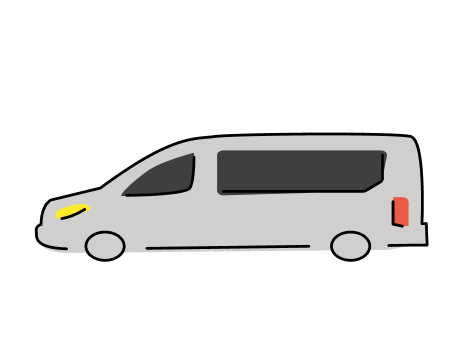

Villkor för färdtjänst
Varje kommun gör en särskild bedömning
av varje person som anöker om färdtjänskortet.
Beslutet begrundas sen efter ansökan med stöd
av Lagen av färdtjänst.
Hur ansöker man om färdtjänst?
Så här ansöker man om färdtjänst i Botkyrka kommun:
- Efter att man fått ett läkarintyg för färdtjänst av din läkare, då skickas intyget till medborgarkontoret.
- Efter att läkarintyget har kommit fram, fyller du i ansökningsblanketten som du får med posten.
- Medborgarcenter gör en bedömning. Du får svar från färdtjänstnämnden med posten.
- Efter 4 veckor skickas färdtjänskortet till dig.
Att resa med färdtjänst
Med ditt färdtjänskort kan du resa i hela Stockholms län.Man kan ta med sig en ledsagare som åker gratis efter att kommunen har beviljat det.
En medresenär har rätt att följa med, men betalar samma pris för resan som du betalar.
För att kunna boka rätt fordon åt dig så måste vi veta i förväg om du har någon sort hjälpmedel så att vi skickar en special anpassad fordon.
Priset börjar med 84 kr för varje 3mil, efter det kostar resan 84 kr per 3 milsträcka.
Du kan både betala direkt efter att du blivit uthämtad eller så kan du få en hemskickad faktura.
Man får ett rätt antal färdtjänstresor att göra beroende på varje enskild person och dess behov. Men man kan ansöka efter att få fler resor.
Tänk bara på att komma ihåg att avboka din resa i tid senast 1 timme före avgång så att någon annan kan få den tiden istället. Tack!